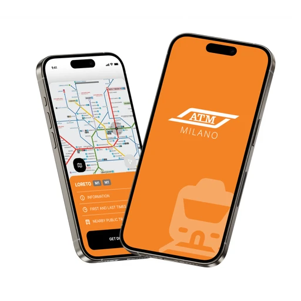
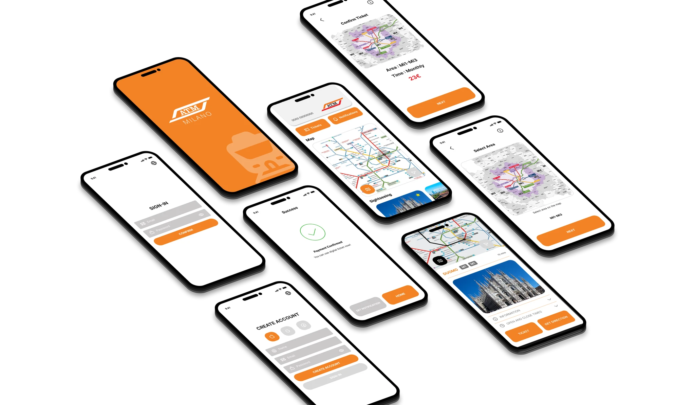
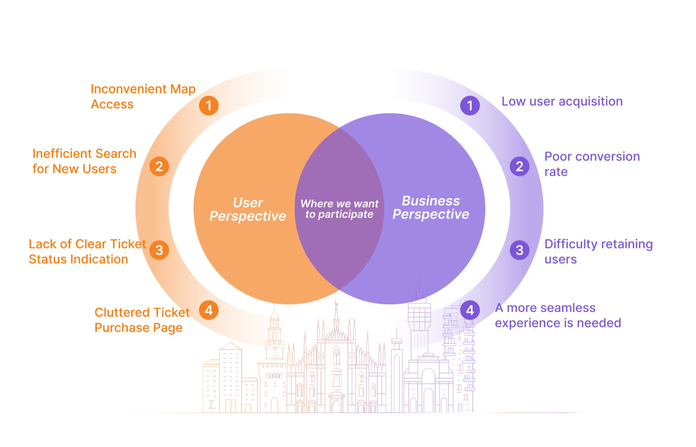
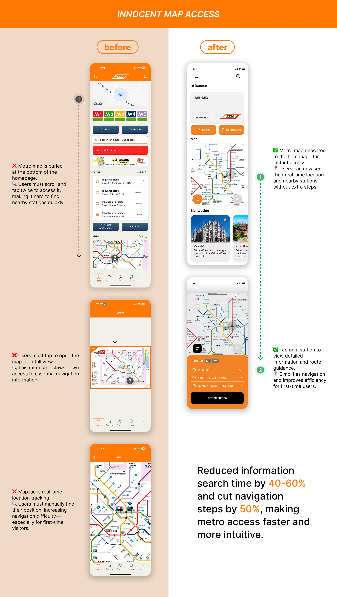
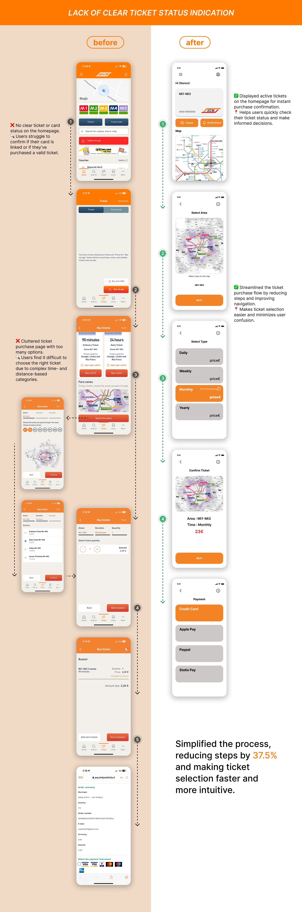
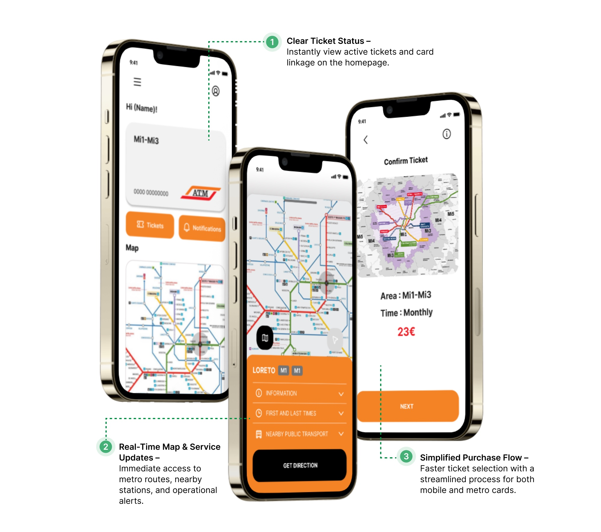
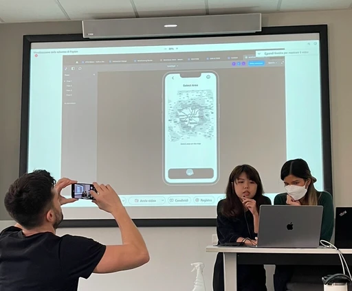

This project aimed to enhance the metro ticket purchasing experience by identifying key challenges faced by foreigners and first-time users. By integrating functionalities from various platforms, we streamlined the process to improve usability, efficiency, and overall user satisfaction.

We streamlined the metro ticket purchasing process, reducing steps by 37.5%.
Our design received positive expert feedback for its strong user research and intuitive UI.

By addressing these usability issues, we aimed to streamline the metro travel experience, reduce learning costs, and improve user efficiency, ultimately enhancing both user satisfaction and business performance.
How might we create a more intuitive metro app that allows users to quickly access maps, check ticket status, and purchase the right ticket with ease?




Una and Kotchakorn created wonderfully simple UI designs based in well researched user problems. They demonstrated a mastery of information hierarchy and showed very promising UI designs in their wireframe prototypes. Very excited to see their future designs. Well done team!
Payton Meyer, Senior Interaction Designer, Google Search, USA